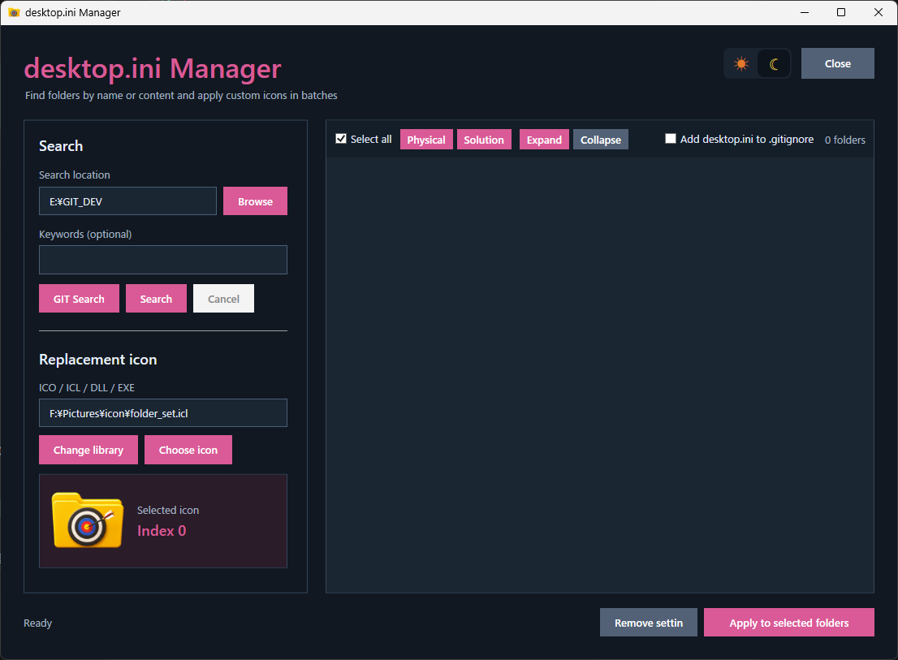
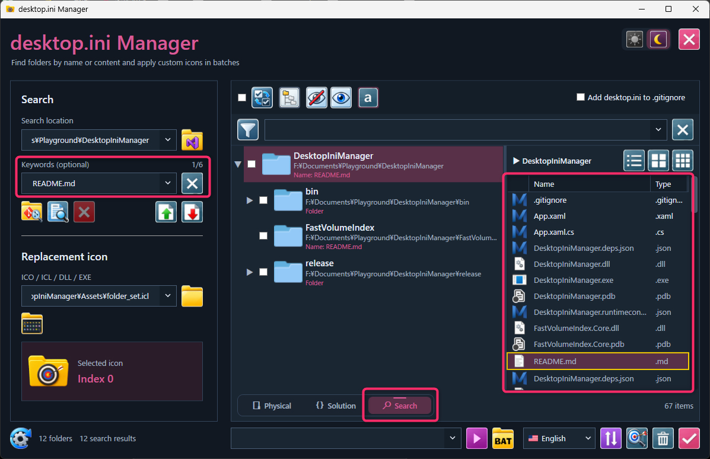
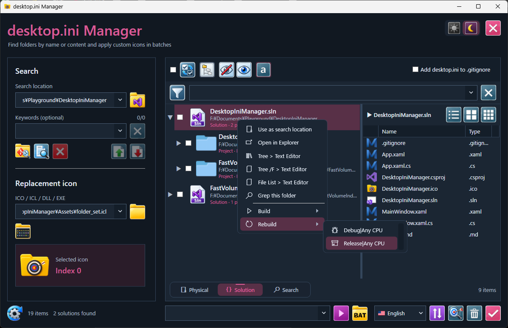
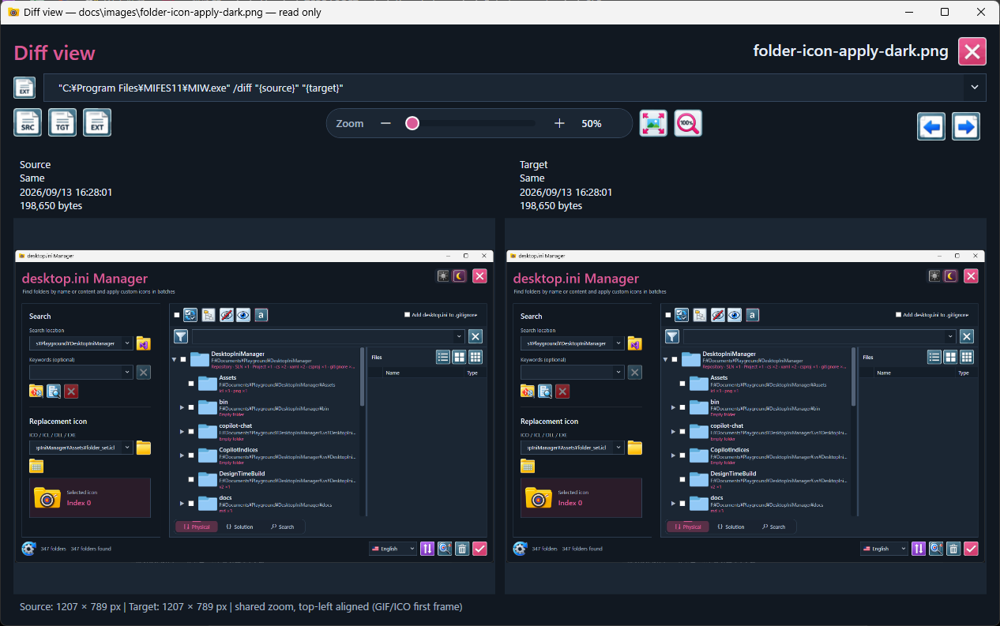
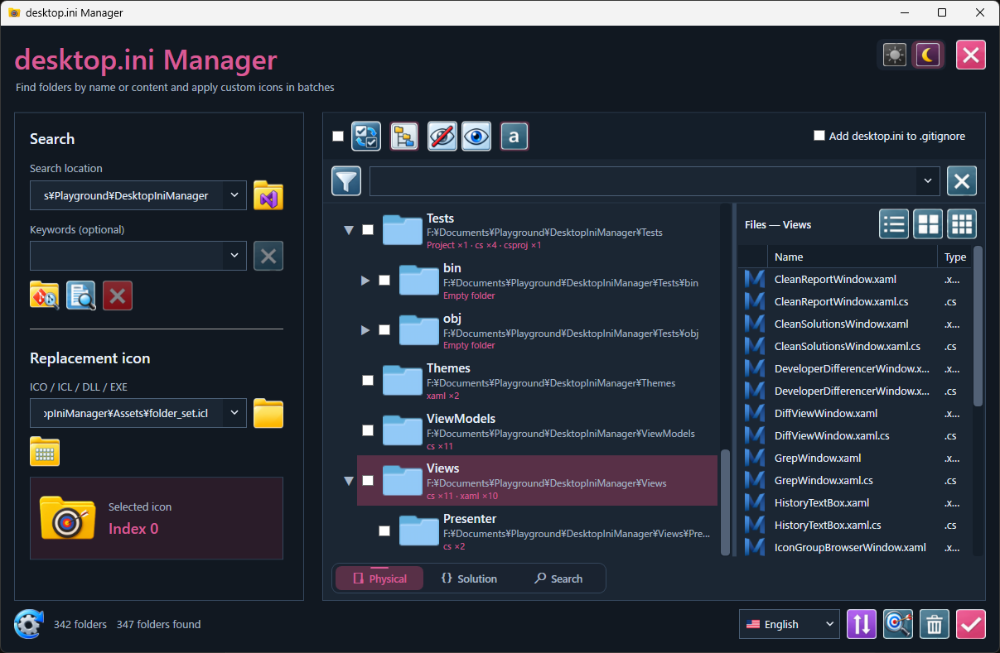
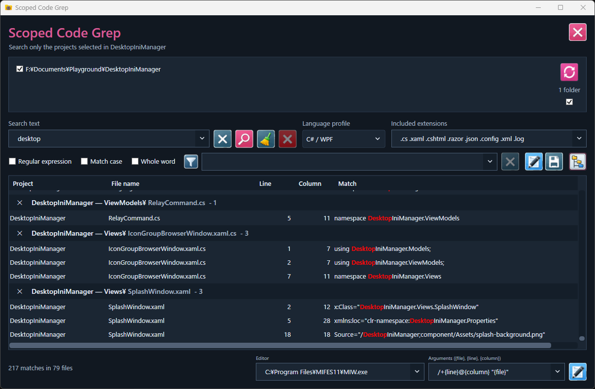
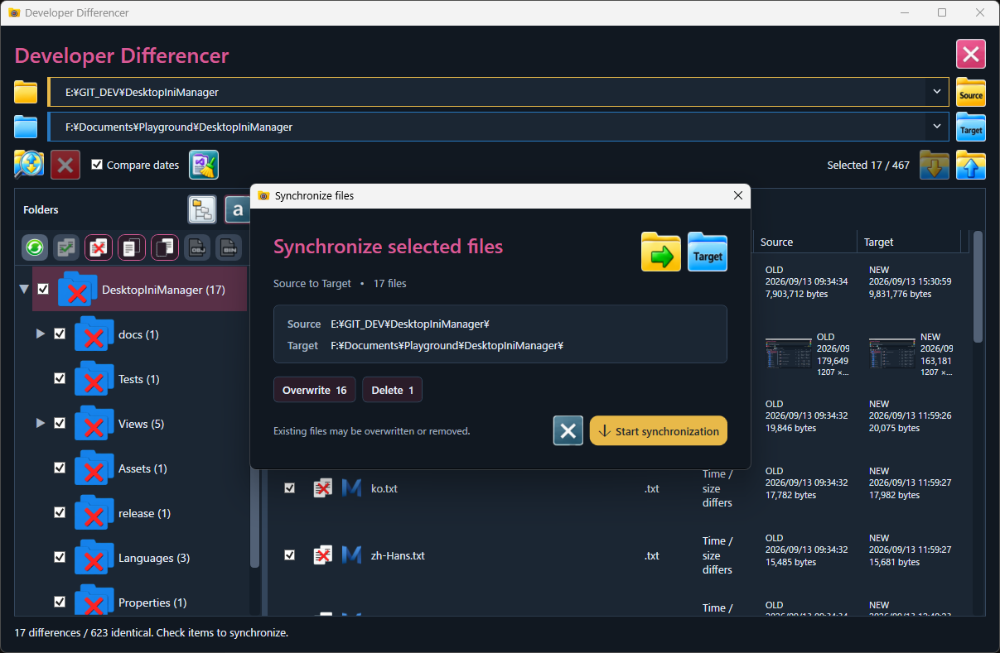
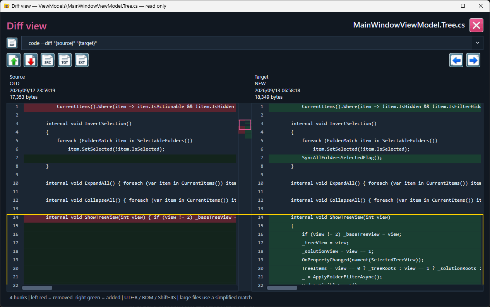

Physical / Solution / Search
実フォルダー、Visual Studio Solution の再構築ツリー、一時的な検索結果を独立したビューとして保持。
Physical / Solution / Search、Scoped Grep、Developer Differencer、フォルダーアイコン管理、Solution Build。Windows上の開発フォルダーを探索・検索・比較・同期するためのワークスペース。

巨大な開発ツリーを、用途ごとに別の道具へ渡し続けるのではなく、同じワークスペース上で扱う。
実フォルダー、Visual Studio Solution の再構築ツリー、一時的な検索結果を独立したビューとして保持。
必要なプロジェクトやフォルダーだけをスコープにして Grep。正規表現、単語一致、言語プロファイル、外部エディタ連携。
Source / Target を比較し、差分を選択して双方向同期。テキストと画像の Diff View も統合。
Solution View から構成を選択し Build / Rebuild。比較前には MSBuild Clean も実行可能。
保持済みデータから Tree / Tree /F / File List を即座にエディタへ。スクリプトもコンテキストメニューから実行。
ICO / ICL / DLL / EXE リソースを desktop.ini に適用。開発用フォルダーアイコンセットを同梱。
検索ナビゲーション、SolutionのBuild / Rebuild、Diff Viewを実際の画面で紹介します。

検索対象ファイルを右側のファイル一覧でもハイライト。前／次ボタンで一致ファイルを順番に移動できます。

Solution Viewの右クリックメニューから構成を選択し、Build / Rebuildを直接実行できます。

Source / Targetを並べ、共通ズーム、Fit、100%表示で画像差分を確認できます。
検索場所を取得すると Physical と Solution のツリーを構築。検索やフィルターを行っても、取得済みワークスペースは維持される。

複数のツリー枝から検索スコープを保持。ファイル、行、桁、マッチ文字列をグループ表示し、設定したエディタへ直接移動できる。

相対パスで Source / Target を比較。Same / Diff / Left / Right で絞り込み、実行前にコピー・上書き・削除件数を確認する。

行番号、変更表示、連動スクロール、差分マップ、前後移動を備えた読み取り専用ビュー。画像は Fit / 100% / 共通ズームに対応。

Windows 10 / 11 x64 · .NET 10 Desktop Runtime (x64) · Release package: DesktopIniManager-v3.2.0-DIR-win-x64.zip